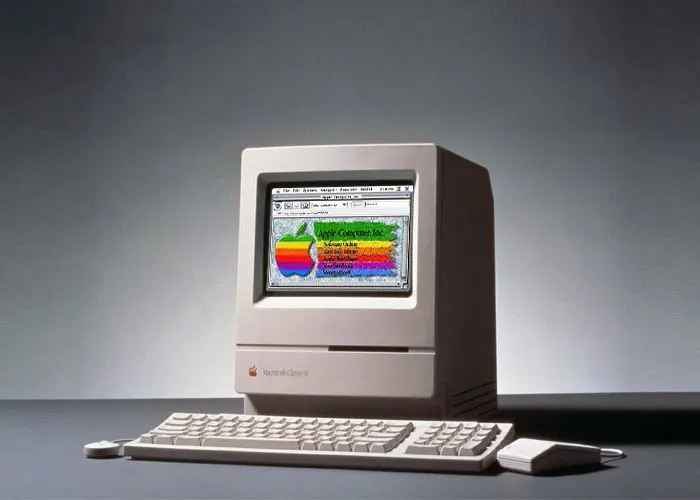

1991. CERN y Tim Berners-Lee
Crean primer navegador, era bastante sofisticado y gráfico solo funcionaba con NeXT el primer navegador del mundo.

1991. Guido Van Rossum
Es un lenguaje interpretado, usa tipado dinámico y es multiplataforma.

1991-2003. Web 1.0
Es la forma más básica que existe con navegadores de solo texto bastante rápidos ya que es de solo lectura.
1993. Apple
El lanzamiento fue en octubre de 1993 como parte del sistema 7.1.1. QuarkXPress (Versión 3.2) fue una de las primeras aplicaciones en soportar applets.
1995
Rasmus Lerdorf
Yukihiro Matz Matsumoto

1995. Benjamin Slivka
Internet Explorer es un navegador web desarrollado por Microsoft para el sistema operativo Microsoft Windows
1997. Java
La especificación original de Servlets fue creada por Microsoft. El Servlet es una clase en el lenguaje de programación Java, utilizada para ampliar las capacidades de un servidor.